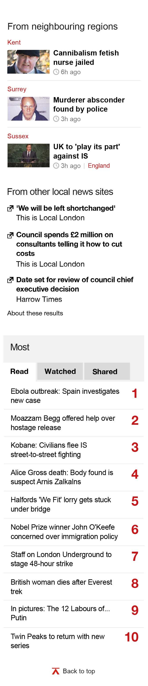
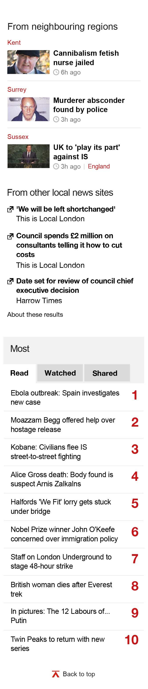

The Cutty Sark avoided major damage when a fire broke out on board over the weekend, London Fire Brigade says.
The Duke and Duchess of Cambridge's next child is due in April, Kensington Palace has said.
Wandsworth Council last night approved plans for the south-west corner of the Battersea Power Station development site.